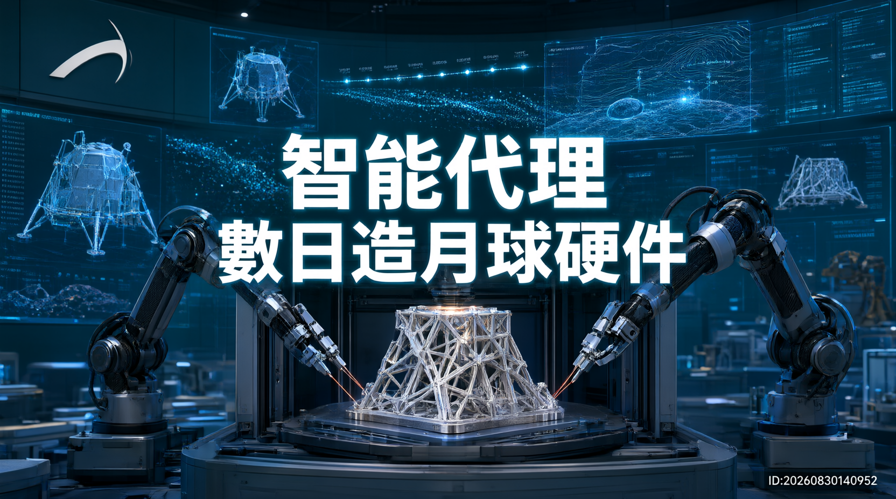

Blue Origin 利用 AWS 代理式 AI 技術，數日內完成月球硬件 TEAREx 的設計與 3D 列印，傳統開發需時數年，速度提升達 75%，讓公司七成員工使用 AI 工具創新。

太空公司 Blue Origin 宣布，利用 Amazon Web Services 的代理式 AI 技術，成功開發出全球首件由 AI 代理設計的月球硬件 TEAREx（Thermal Energy Advanced Regolith Extraction），從概念到 3D 打印部件僅需數日，相比傳統航太開發動輒以年計的週期，速度提升達 75%，同時讓公司七成員工能使用 AI 工具進行創新。
TEAREx 全程由 AI 代理主導設計，突破了傳統航太開發以年計算的週期限制。Blue Origin 現已部署超過 2,000 個 AI 代理，讓每位員工都能存取專有知識庫和自訂工具，實現「人人都能用 AI 工作」的目標。
全球首件由 AI 代理設計的月球硬件，專為月球南極惡劣環境設計，用於提取月球表面水冰資源，3D 列印僅需數日。
超過 2,000 個 AI 代理的企業平台，建基於 Amazon Bedrock、Strands Agents SDK 等，讓員工創建和部署專門代理。
GPU 加速運算配合航太領域專家支援，在確保最高數據保護標準的前提下處理專有知識，突破傳統開發瓶頸。
傳統航太開發以年計算，AI 代理僅需數日完成從概念到 3D 列印的整個流程，大幅壓縮產品開發週期。
| 維度 | 傳統航太開發 | Blue Origin AI 代理 |
|---|---|---|
| 開發週期 | 數年迭代設計 | 數日完成 |
| 知識傳遞 | 依賴資深工程師 | AI 代理規模化 |
| 員工參與度 | 少數專家主導 | 七成員工使用 AI |
| 數據安全 | 傳統 IT 架構 | AWS 航太級標準 |
「我們需要能真正執行專業工作的 AI，而非單純輔助。」
── Will Brennan，Blue Origin 企業科技副總裁Blue Origin 建立基於 Strands Agents SDK、Amazon Bedrock 等技術的 AI 生態系統，部署超過 2,000 個 AI 代理。
AI 代理接收月球水冰開採需求，結合專業知識庫進行熱能採樣硬件的概念設計與模擬。
從概念到 3D 列印部件僅需數日，相比傳統航太開發動輒以年計算的週期，大幅壓縮。
AI 工具在 Blue Origin 全面普及，每位員工都能創建和部署專門的 AI 代理進行創新工作。
代理式 AI 在航太高階製造成功落地，標誌著 AI 從輔助工具進化為可執行專業工作的企業代理。
這個案例展示了代理式 AI 在高階製造業的潛力。與消費級 AI 應用不同，航太工程涉及嚴格的出口管制、數據安全和專業標準，Blue Origin 在確保最高數據保護標準的前提下，讓 AI 處理專有知識。AWS 提供的 GPU 加速運算和航太領域專家支援，成為關鍵促成因素。
隨著代理式 AI 在航太製造的成功落地，此技術有望擴展至更多高端製造領域，包括半導體、生物製藥及精密儀器等，推動新一輪工業智能化轉型。